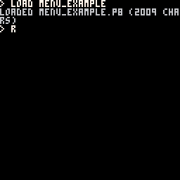

The full demo is available
here.
You can load this game up by copying the p8 file into your 'Carts' folder, then typing 'load menu_example' into the pico-8 Console

-
Firstly, we'll need the main table and a menu table:
game = {}
game_menu = {
-- Colour for selected menu item
selected = 1,
-- Colour for unselected menu item
not_selected = 9,
-- three menu items
menu_items = {
start = {"test", false, 0, 0, 25, 13, nil},
first = {"this", false, 0, 15, 25, 28, nil},
second = {"menu", false, 0, 30, 25, 43, nil}
},
mouse = { 0, 0, 0 }
}
What should be noted here is that game shouldn't have anything in it; it's gonna be what pico-8 calls to run all of our cool stuff.
game_menu in this case is one such thing that will go into game, which we'll see later on.
-
Next, We need to setup what exactly game_menu will do.
-- when game_menu is the current logic in-use, this will be the update function
game_menu.update = function()
game.mouse = { stat(32), stat(33), stat(34) }
for idx, elem in pairs(game_menu.menu_items) do
elem[2] =
between(game.mouse[1], elem[3] + 50, elem[5] + 50) and
between(game.mouse[2], elem[4] + 30, elem[6] + 30)
if elem[2] and game.mouse[3] == 1 then
game = elem[7]
return
end
end
end
-- when game_menu is the current logic in-use, this will be the draw function
game_menu.draw = function()
local offsetx = 50
local offsety = 30
for idx, elem in pairs(game_menu.menu_items) do
if elem[2] then
rect(elem[3] + offsetx, elem[4] + offsety,elem[5] + offsetx, elem[6] + offsety, game_menu.selected)
else
rect(elem[3] + offsetx, elem[4] + offsety,elem[5] + offsetx, elem[6] + offsety, game_menu.not_selected)
end
print(elem[1], elem[3] + 2 + offsetx, elem[4] + 2 + offsety)
end
if game.draw_mouse_if_exists then
game.draw_mouse_if_exists()
end
end
-- Render the cursor (Sprite 0)
game_menu.draw_mouse_if_exists = function()
if game.mouse then
spr(0, game.mouse[1], game.mouse[2])
end
end
This will draw the menu_items and allow the player to see and click on the items.
The mouse drawing stuff is in its own function because it could be used in multiple places (less writing = happier programmers!).
-
This next part is an example of the way lua allows you to just swap stuff in and out. The three menu_items need only have something called 'draw' that _draw -> game.draw() can call as it needs to and the magic just happens!
-- Only implement a draw method
-- These elements do not need update logic
game_start = {}
game_start.draw = function()
print("start")
end
game_first = {}
game_first.draw = function()
print("bomb")
end
game_second = {}
game_second.draw = function()
print("second")
end
-
Lastly for the code, we need to add in the pico-8 functions to actually make all of this come together.
function global_updates()
end
--[[
On initialisation, set game_menu as the current menu,
populate the logic of the menu_items,
listen for mouse input (the 'poke' thing)
]]--
function _init()
poke(0x5f2d, 1)
game = game_menu
game_menu.menu_items.start[7] = game_start
game_menu.menu_items.first[7] = game_first
game_menu.menu_items.second[7] = game_second
end
function _update()
global_updates()
if game and game.update then
game.update()
end
end
function _draw()
cls()
if game and game.draw then
game.draw()
end
end
function between(val, a, b)
return val >= a and val <= b
end
There's a few new things here;
-
_init - Initialisation stuff. this runs when your game starts and is useful for preparing the game.
-
poke() - Mouse stuff. 'poke(0x5f2d, 1)' sets up the mouse so that we can get its position every update
-
if game and game.update then - check if something called 'game' exists and that it has the property 'update'. This allows us to safely not bother defining update on game_start, _first, and _second. In programming, this 'is it a thing' kindof test uses whats called truthiness.